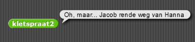
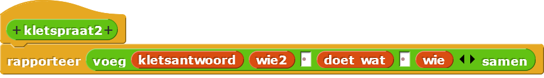
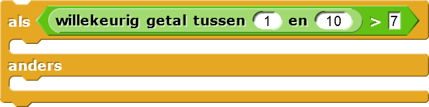

Je Eigen Blok Maken
Op deze pagina, ga je een blok maken dat ervoor zorgt
dat het programma wat meer op een gesprek lijkt door zinnen als "Ik hoorde het," "Wat maakt dat uit!" of
"Hee, raad eens" in plaats van altijd "Oh, maar."
blok maken dat ervoor zorgt
dat het programma wat meer op een gesprek lijkt door zinnen als "Ik hoorde het," "Wat maakt dat uit!" of
"Hee, raad eens" in plaats van altijd "Oh, maar."

- Als je het nog niet geopend hebt, open je H1L2-Kletspraat-project.
- Maak een
blok. Instructies vind je hieronder.
Een Nieuw Blok Maken
- 1 Klik
 in het Variabelen palette, of
Control-klik (of met rechtermuisknop) in een lege plek in het script gedeelte
en kies "maak een blok..."
in het Variabelen palette, of
Control-klik (of met rechtermuisknop) in een lege plek in het script gedeelte
en kies "maak een blok..." - Kies een kleur, in dit geval rood, voor Lijsten.
- Typ de titel van je blok: .
- Selecteer de vorm en klik op OK. Voor dit blok, kies de ovale
rapporteer vorm want wat je wilt is dat het een waarde rapporteert (de gekozen
reactie) naar een ander blok (de
voeg in).

Blok Bouw Essenties
In Snap!, heeft elk blok een kleurcategorie nodig, ook wel bekend als een palet. Grijs ("Anders") is de standaard. Het heeft ook een type nodig (te herkennen aan de vorm van het blok), een titel, en een script dat het gedrag definieert.

Het script van het blok coderen
- Sleep de blokken die je nodig hebt naar het vlak. Voor dit blok, gebruik je en .
- Klik de blokken aan elkaar. De structuur van de code lijkt op
wie,doet wat, enwie2. - Vul alle invoeren in.
- Voor dit project, op het pijltje naar beneden in
itemom "1" te veranderen in willekeurig. - Vul dan de
lijstmet zinnen.
- Voor dit project, op het pijltje naar beneden in
- Klik OK wanneer je tevreden bent.
In veel programmeertalen, of wat Snap! een rapporteur noemt (blokken met een ovale vorm zoals ) wordt een functie genoemd en wat Snap! een commando noemt (blokken met een puzzel achtige vorm zoals ) wordt een procedure genoemd. Maar programmeertalen zijn hier niet heel consistent in. Sommigen noemen allebei "functie" en anderen noemen allebei "procedure". (Ook gebruiken de meeste talen deze woorden alleen voor procedures of functies die jij schrijft, niet degene die in een taal gebouwd zijn.)
Debugging
- Test je speciaal gemaakte
kletsantwoordblok door er meerdere keren op te klikken. Het zou zich zoals dewie,doet wat, enwie2blokken moeten gedragen. - Debug alle problemen voordat je verder gaat.
- Gebruik je nieuwe blok. Pas
kletspraat2aan, en voegkletsantwoordin op de plaats van de tekst "Oh, maar...."  - Test en debug
kletspraat2ook. - Dan test je het hele programma door meerdere keren op script D te klikken, en fix alle bugs.
- Bewerk
kletspraatenkletspraat2zodat soms, niet te vaak, dingen gezegd worden als "John en Paul" gebruikmakend van twee van de namen in de lijstenwieofwie2.- Je kunt code gebruiken zoals

om iets alleen soms te doen. Verander de 7 in een andere getal om de waarschijnlijkheid aan te passen. - Als je programma twee namen gebruikt aan het begin van de zin, moet je een meervoudig
werkwoord gebruiken in plaats van een enkel werkwoord. Je kunt twee versies hebben van
doet watmet verschillende lijsten, of je kunt proberen een werkwoord te pakken gerapporteerd doordoet waten een set regels gebruiken ("als het woord eindigt in x verander het in zz") om een werkwoord in meervoud te zetten.
- Je kunt code gebruiken zoals